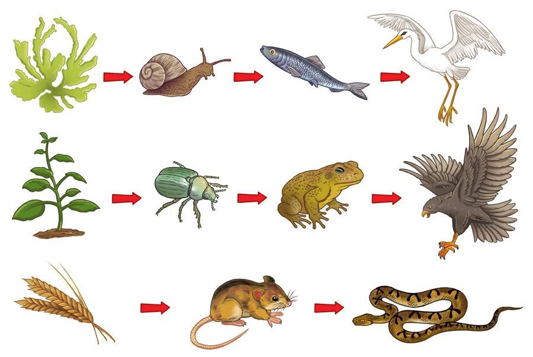
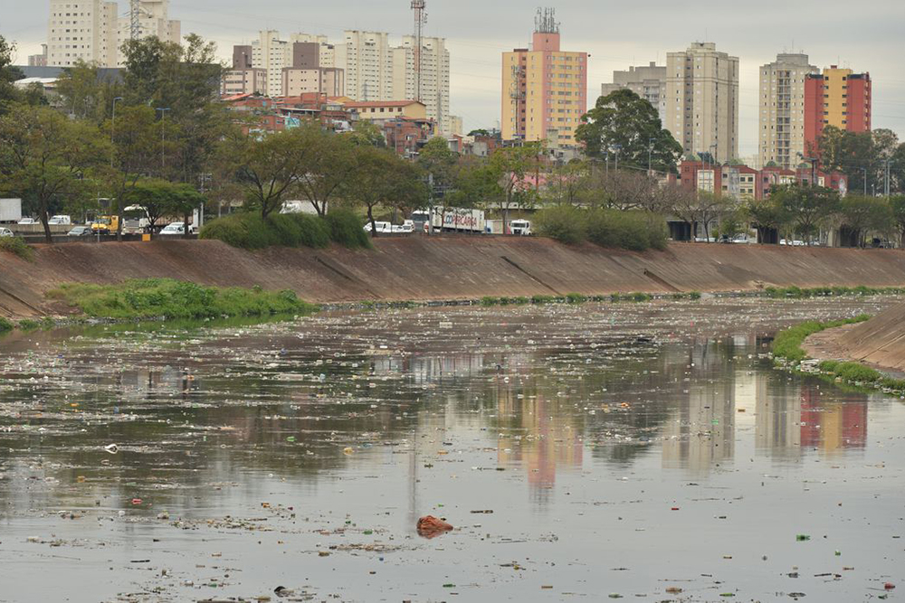
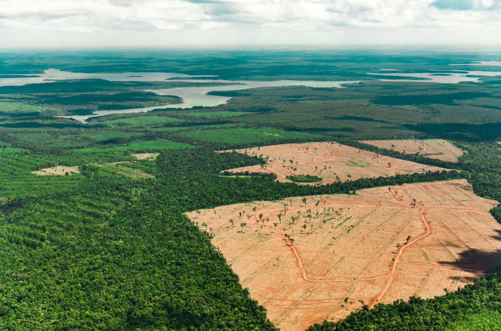

Ecologia
O que é ecologia?
Ecologia é o estudo das relações entre os seres vivos e o ambiente em que vivem. Ela analisa como os organismos interagem entre si e com fatores abióticos (não vivos), como clima e solo. Diferente de meio ambiente que é o estudo sobre o lugar que o seres vivos vivem.
Conceitos básicos
Ecossistemas:
uma unidade funcional que inclui tanto os organismos vivos quanto os elementos não vivos do ambiente, e suas relações e interações.Biodiversidade:
Refere-se à variedade de vida na Terra, incluindo todos os seres vivos (plantas, animais, fungos e micro-organismos). Ela é fundamental para a manutenção dos ecossistemas e para o bem-estar humano, fornecendo serviços essenciais como alimentos, água limpa e ar puro.Cadeias alimentares:
Cadeias alimentares são sequências lineares de organismos em que um serve de alimento para o outro. Elas começam com os produtores, que criam seu próprio alimento, e seguem com consumidores (herbívoros, carnívoros) e decompositores. Problemas ambientais
Poluição do ar, da água e do solo:
A poluição é causada principalmente por atividades humanas, como a queima de combustíveis fósseis, uso de agrotóxicos, descarte inadequado de resíduos e esgoto.Ar:
Emissões de indústrias e veículos prejudicam a saúde e agravam o efeito estufa.Água:
Rios, lagos e oceanos são contaminados por esgoto, lixo e produtos químicos, afetando ecossistemas aquáticos e o abastecimento humano.
Solo:
O uso excessivo de agrotóxicos, descarte de lixo e mineração degradam a terra, tornando-a improdutiva.Aquecimento global e mudanças climáticas:
O aquecimento global é o aumento da temperatura média da Terra, causado pela emissão de gases do efeito estufa (como CO₂ e metano). Isso provoca mudanças climáticas, como: Derretimento de geleiras, Aumento do nível do mar, Secas e enchentes mais intensas, Impactos na agricultura e biodiversidadeDesmatamento:
A derrubada de florestas, principalmente para agricultura, pecuária e extração de madeira, causa: Perda de biodiversidade, Alterações no ciclo da água e no clima, Aumento do CO₂ na atmosfera, agravando o aquecimento global.